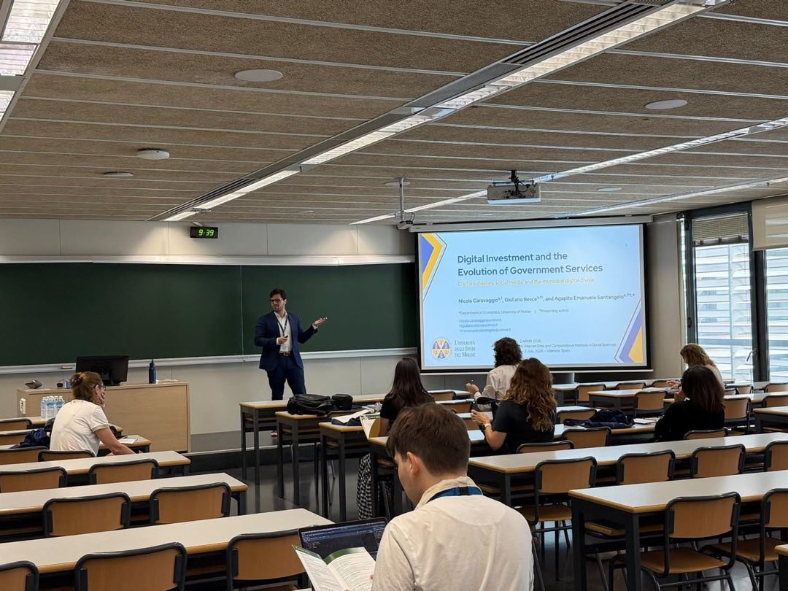
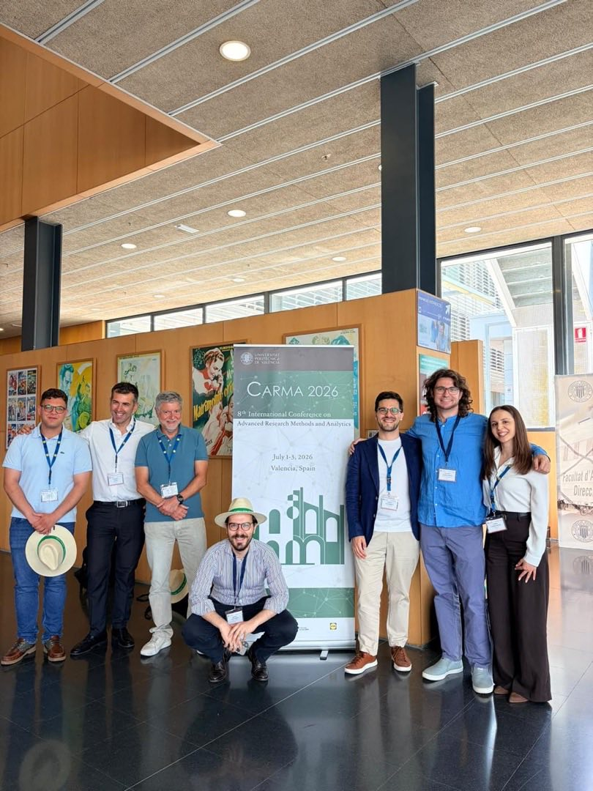
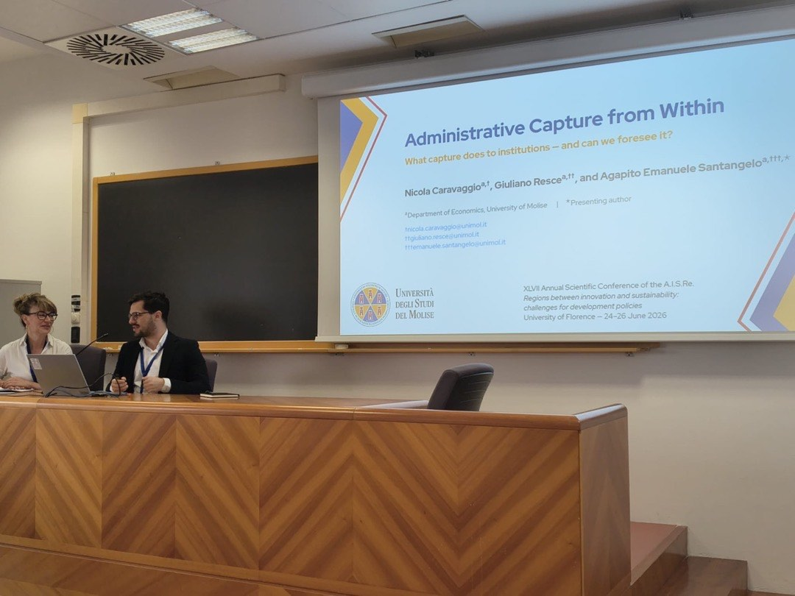
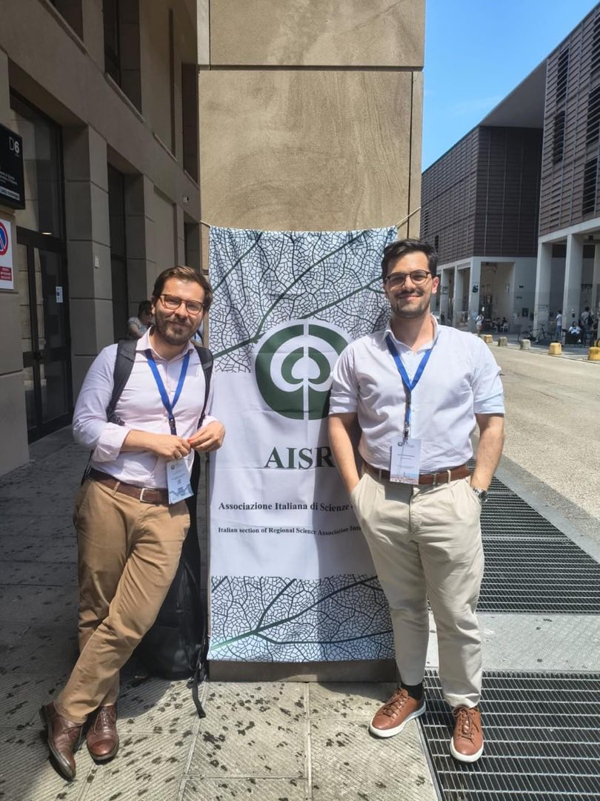
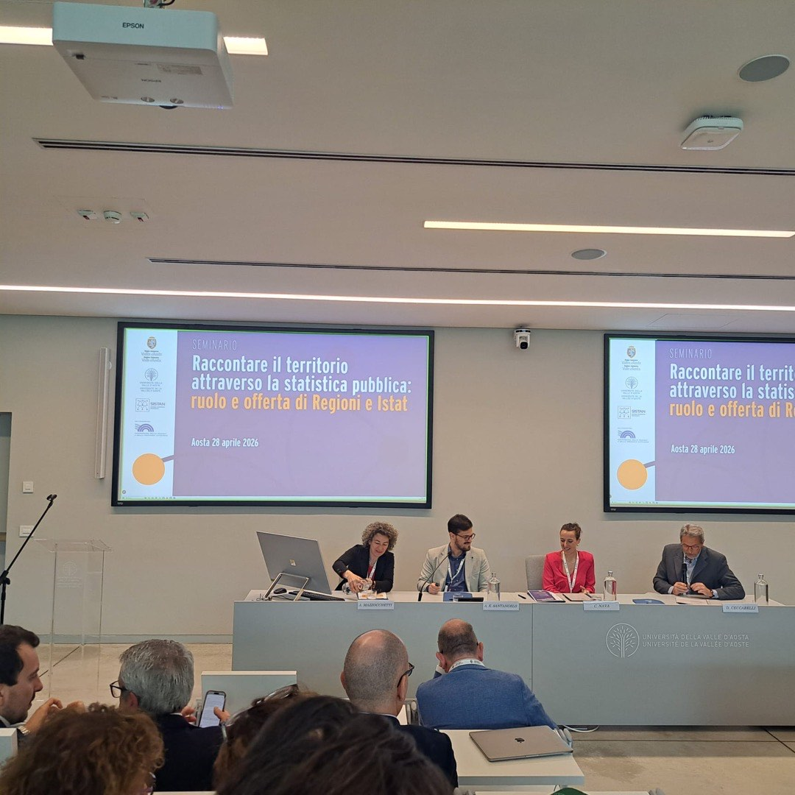
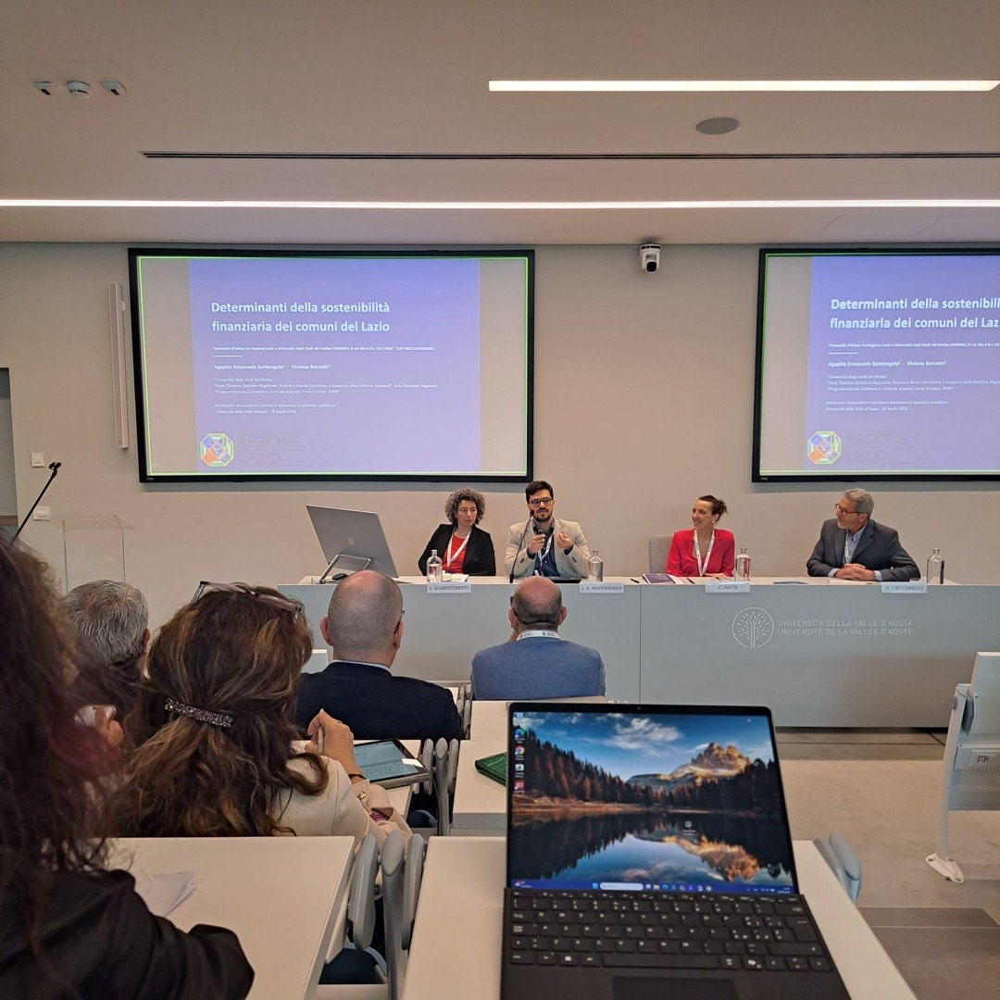
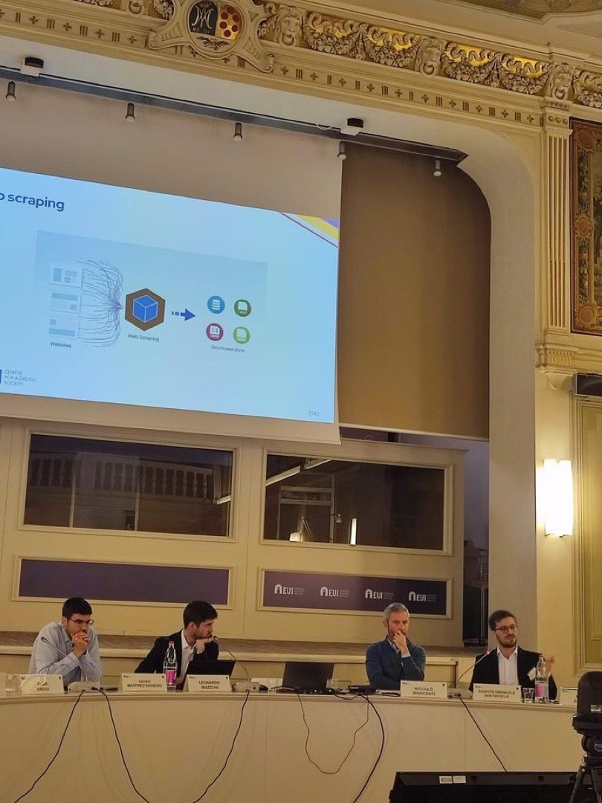

Talk e conferenze
2026
-
RelatoreDigital Investment and the Evolution of Government ServicesCARMA 2026 — 8ª International Conference on Advanced Research Methods and Analytics · Universitat Politècnica de València · 1–3 luglio 2026. Paper su investimenti digitali, sussidi e divario digitale municipale (con N. Caravaggio e G. Resce), presentato nell’ambito del tema AI, Internet Data and Computational Methods in Social Sciences. Link →

Presentazione di Digital Investment and the Evolution of Government Services — CARMA 2026, Universitat Politècnica de València, 2 luglio 2026. 
Il gruppo di ricerca al banner di CARMA 2026 — Universitat Politècnica de València, 1–3 luglio 2026. -
RelatoreAdministrative Capture from WithinAISRe 2026 — XLVII Conferenza Scientifica Annuale dell’Associazione Italiana di Scienze Regionali · Università di Firenze, Campus di Novoli · 24–26 giugno 2026. Paper su cattura amministrativa e qualità delle istituzioni (con N. Caravaggio e G. Resce), nell’ambito del tema «Regioni tra innovazione e sostenibilità: le sfide per le politiche di sviluppo». Link →

Presentazione di Administrative Capture from Within — XLVII Conferenza AISRe, Università di Firenze, 26 giugno 2026. 
Al banner dell’Associazione Italiana di Scienze Regionali — Campus di Novoli, Università di Firenze, giugno 2026. -
RelatoreDeterminanti della sostenibilità finanziaria dei comuni del LazioUniversità della Valle d’Aosta · Polo Universitario, Via Monte Vodice · 28 aprile 2026. Relazione presentata nell’ambito del seminario «Raccontare il territorio attraverso la statistica pubblica: ruolo e offerta di Regioni e Istat» (Aosta, 27–28 aprile 2026), promosso dal Coordinamento Statistico Interregionale e dall’Istat. Lavoro congiunto con Viviana Borzetti (Ufficio regionale di statistica - Regione Lazio), nell’ambito del Protocollo d’Intesa tra Regione Lazio e Università del Molise.

Apertura del seminario Raccontare il territorio attraverso la statistica pubblica, Università della Valle d’Aosta, 28 aprile 2026. 
Presentazione del paper su determinanti e sostenibilità finanziaria dei comuni del Lazio — Università della Valle d’Aosta, 28 aprile 2026. -
RelatoreLe transizioni nei sistemi territorialiUniversità degli Studi di Foggia — Dipartimento di Economia · Aula Magna “V. Spada” · 20–21 febbraio 2026. Convegno di due giornate su transizioni ambientali e digitali, economia pugliese, e divario fra aree interne e aree urbane. La seconda giornata si svolge in lingua inglese con taglio più tecnico. Link →
Talk sugli indicatori digitali delle dinamiche territoriali — Le transizioni nei sistemi territoriali, Università di Foggia, 20–21 febbraio 2026.
2025
-
RelatoreUnderstanding and Addressing Digital InequalitiesAnnual Scientific Conference on Digital Democracy — Centre for a Digital Society, Robert Schuman Centre, European University Institute (EUI) · Firenze, 20–21 novembre 2025

Panel alla conferenza annuale dell’EUI Centre for a Digital Society sulla Digital Democracy — presentazione della metodologia di web scraping per la misurazione delle disuguaglianze digitali (Firenze, novembre 2025). - RelatoreSIE 2025 — 66ª Riunione Scientifica AnnualeSocietà Italiana di Economia · Università di Napoli Parthenope, 23–25 ottobre 2025
-
DiscussantTavola rotondaOttobre 2025.

Tavola rotonda a margine di conferenza, ottobre 2025. - RelatoreAISRe 2025 — XLVI Conferenza Scientifica AnnualeAssociazione Italiana di Scienze Regionali (sezione italiana RSAI) · Università “G. d’Annunzio” di Chieti-Pescara, 10–12 settembre 2025
- Organizzatore e relatoreCARMA 2025 — 7ª International Conference on Advanced Research Methods and AnalyticsRoma, 2–4 luglio 2025. Due paper presentati; co-organizzatore e session chair.
2024
- Organizzatore e relatoreCARMA 2024 — 6ª International Conference on Advanced Research Methods and AnalyticsUniversitat Politècnica de València, 26–28 giugno 2024. Tre paper presentati; co-organizzatore.
- OrganizzatoreHEAd’24 — 10ª International Conference on Higher Education AdvancesUniversitat Politècnica de València, giugno 2024.
- RelatoreSoFIA 2024 — 2° Workshop on Social Health Frailty as Determinants of Inequality in AgeingUniversità del Molise.